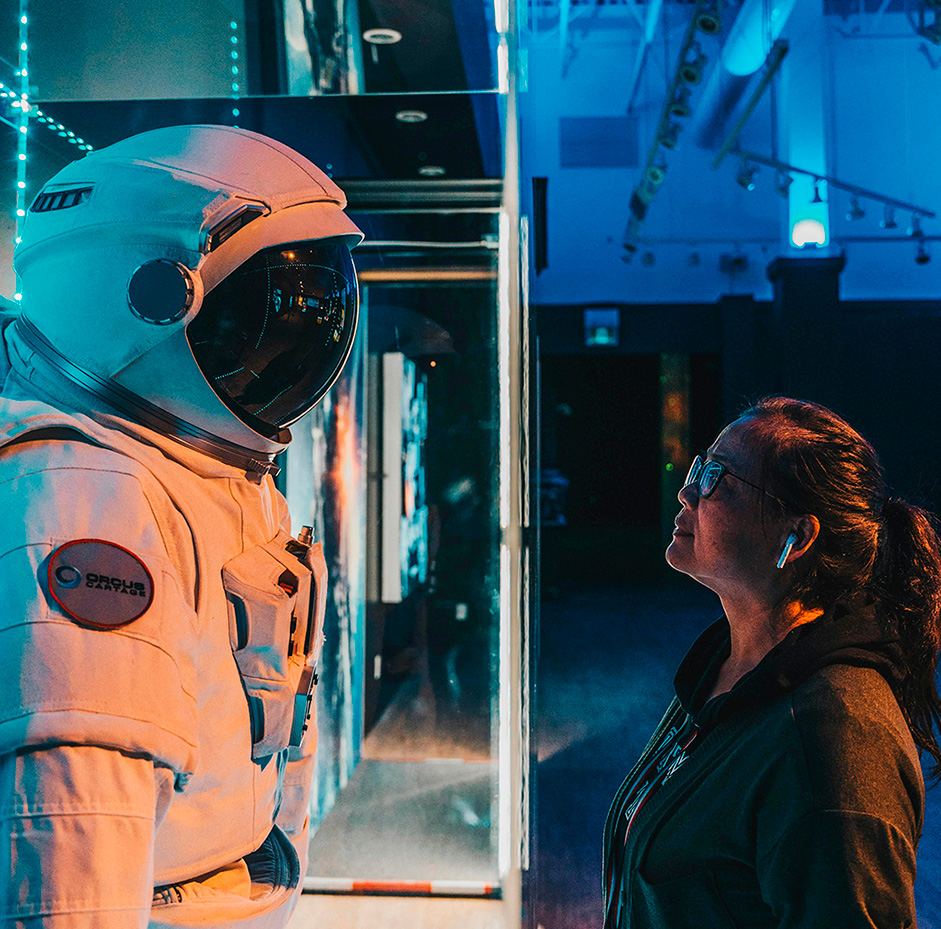
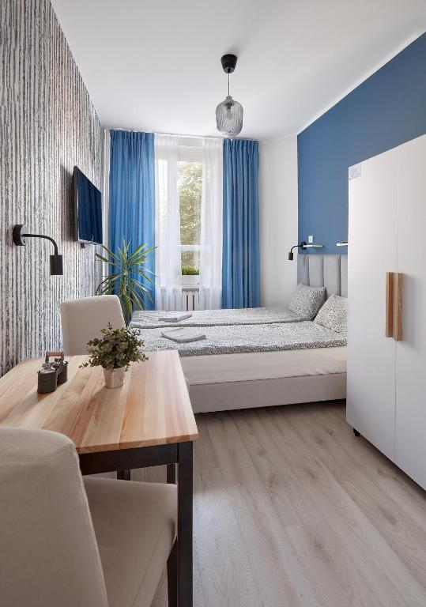
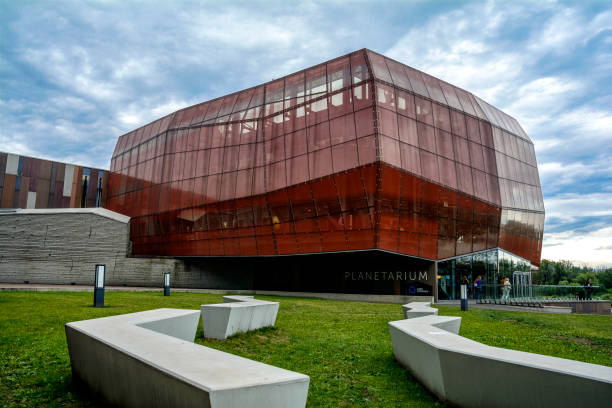
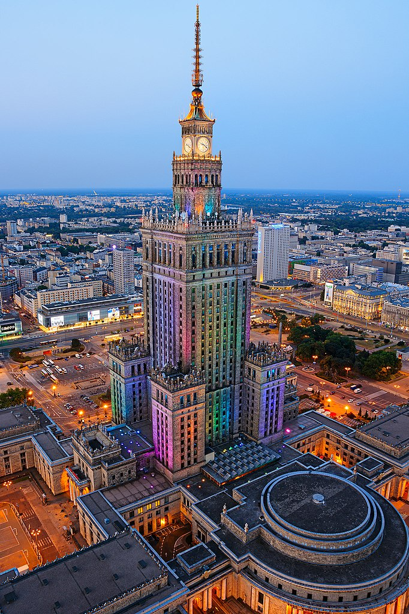

El humano en el espacio
Descripción
Un viaje educativo y cultural en el corazón de Varsovia Polonia. Dos días y una noche.
En la capital de Polonia, la experiencia estará centrada en la ciencia, la innovación y la historia
arquitectónica de la ciudad. Durante el viaje se visitará el Copernicus Science Centre (Centrum
Nauki Kopernik) Wybrzeże Kościuszkowskie 20
00-390, un moderno museo científico situado junto al río Vístula. El centro cuenta con más de 450
exposiciones interactivas donde los visitantes pueden experimentar y descubrir de forma práctica las
leyes de la ciencia y la tecnología.
El viaje también incluye la visita al :Palacio de la Cultura y la Ciencia, uno de los edificios más emblemáticos de Varsovia. Construido en los años 50, este gran palacio del arte y la cultura combina estilos arquitectónicos monumentales y alberga teatros, salas culturales, espacios deportivos, cines y una terraza panorámica con vistas a toda la ciudad.
Precio del viaje : por persona. Incluye vuelos de ida y vuelta a Polonia, alojamiento de una noche en hotel céntrico de Varsovia, entrada al Copernicus Science Centre, acceso al Palacio de la Cultura y la Ciencia, visitas guiadas y desayuno incluido.
Mejor epoca del año
En primavera Varsovia tiene temperaturas agradables, menos lluvias y días más largos, lo que permite disfrutar mejor tanto de las visitas culturales como de las vistas panorámicas de la ciudad.
Itinerario
Día 1 - Llegada a Varsovia
Instalación y tiempo libre · 09:00 - 14:00
La experiencia comienza con la llegada a Varsovia y el traslado al Tatamka Hostel, ubicado en el centro de la ciudad, cerca de Nowy Świat, Krakowskie Przedmieście y del casco histórico. El alojamiento cuenta con habitaciones luminosas, WiFi gratuita, cocina compartida equipada y recepción 24 horas.
El Tatamka Hostel está ubicado junto a la 2ª línea del metro, entre las estaciones Nowy Świat-Uniwersytet y Centrum Nauki Kopernik. La estación central de tren de Varsovia queda a 2 km. Se encuentra a solo 15 minutos a pie del centro histórico. El Museo Chopin está a 5 minutos, mientras que el Centro de Ciencias Copérnico se halla a 10 minutos a pie. El Estadio Nacional, donde se llevan a cabo diversos eventos deportivos y musicales, queda a 15 minutos a pie.
Tras dejar el equipaje y acomodarse en el hotel, los viajeros dispondrán de tiempo libre durante la mañana para descansar, recorrer los alrededores o descubrir las calles y cafeterías del centro de Varsovia.

Día 1 - Copernicus Science Centre
Exploración interactiva y ciencia · 16:00 - 19:00
Por la tarde se realizará la visita al Copernicus Science Centre, uno de los museos científicos más importantes de Polonia. Durante la actividad, los viajeros podrán descubrir exposiciones interactivas relacionadas con la física, el espacio, la tecnología y la astronomía.
La exposición del museo está dividida en diferentes secciones dedicadas a diversos campos del conocimiento, entre ellas: “¡En movimiento!”, centrada en la física y el movimiento; “El hombre y el medio ambiente”, relacionada con la biología y la naturaleza; “Buzzz!”, diseñada para niños en edad preescolar; “Lightzone”, dedicada a la luz y los fenómenos visuales; “Raíces de la civilización”, enfocada en el desarrollo humano; y “RE: generation”, creada especialmente para jóvenes adultos. Además, el centro alberga el planetario “Los cielos de Copérnico”, donde se realizan proyecciones astronómicas inmersivas.

Día 2 - Palacio de la Cultura y la Ciencia
Historia y vistas panorámicas · 10:00 - 13:00
La jornada comenzará con una visita al emblemático Palacio de la Cultura y la Ciencia, uno de los edificios más representativos de Varsovia. Durante el recorrido se conocerá la historia del edificio, sus espacios culturales y sus impresionantes vistas panorámicas de la ciudad desde el mirador superior.
Además, habrá tiempo para recorrer los alrededores y disfrutar del ambiente urbano del centro de Vars.

Día 2 - Regreso y vuelo de vuelta
Cierre del viaje · 16:00 - 20:00
Después de finalizar las actividades y disponer de tiempo libre para las últimas compras o paseos, se realizará el traslado al aeropuerto para tomar el vuelo de regreso. El viaje concluye tras dos días descubriendo la cultura, la ciencia y algunos de los lugares más emblemáticos de Varsovia.


Nota importante: Los programas descritos son susceptibles de cambios por razones puntuales ajenas a nuestra organización, tales como condiciones meteorológicas o de seguridad.
Observaciones
- Si alguien tiene alergia o intolerancia a algún tipo de alimento deberá comunicarlo a la agencia para prever incidentes inesperados que cundan el panico.
- Si alguien tiene algún tipo de enfermedad que afecte a la respiración, resistencia o movimiento, deberá comunicarlo a la agencia para prever una mayor seguridad y adaptación.
- Si traen menores de edad o acompañan a personas con necesidades especiales, manténganse pendientes de ellos y no se separen en ningún momento. Recuerden presentárselos a los guías e informarles de todo lo necesario que deban tener en cuenta.
- Cualquier siniestro sucedido durante el viaje o emergencia médica será responsabilidad económica de la propia persona afectada. Los costes correrán por cuenta del viajero. Se le acompañará o transportará a la zona de asistencia médica más cercana y, si es posible, el grupo continuará su recorrido.Si el viajero se recupera a tiempo para el regreso, será reincorporado al viaje. En caso de que no sea posible, deberá ponerse en contacto con sus familiares, amigos u otras personas de confianza para poder regresar a su hogar cuando esté recuperado.
Gastos de anulación según fecha de salida
| HASTA | IMPORTE |
|---|---|
| Más de dos meses de anticipación | 0% |
| Un mes de anticipación | 40% |
| Una semana de anticipación | 80% |
| El dia del viaje | 100% |
Conforme más se acerque a la fecha de salida el importe que se le quitara a su viaje sera mayor.
El precio incluye
- Alojamiento completo
- Guía especializado
- Billete de avión
- Excursiones nocturnas
El precio no incluye
- Transporte interno
- Comidas y cenas
- Seguro opcional
- Gastos personales
Preguntas frecuentes
Aprende mas sobre tu viaje, no te pierdas nada.
El viaje incluye el transporte de ida y vuelta, pero no los transportes hurbanos, como buses entre otros, además de los traslados necesarios para realizar las actividades programadas de este viaje se pueden realizar a pie.
No. El museo está pensado para todo tipo de visitantes y cuenta con exposiciones interactivas y actividades fáciles de comprender y disfrutar.
Sí. El itinerario incluye momentos libres para recorrer Varsovia, visitar tiendas, cafeterías o descubrir el ambiente de la ciudad a tu ritmo.
Se recomienda llevar ropa cómoda para caminar, documentación personal y una chaqueta ligera o abrigo. No es seguro pero normalmente es un lugar lluvioso, se aconseja traer chubasquero o paraguas de mano.
Sí. Tanto las actividades culturales como las visitas a los museos están pensadas para viajeros de diferentes edades y no requieren esfuerzo físico intenso.